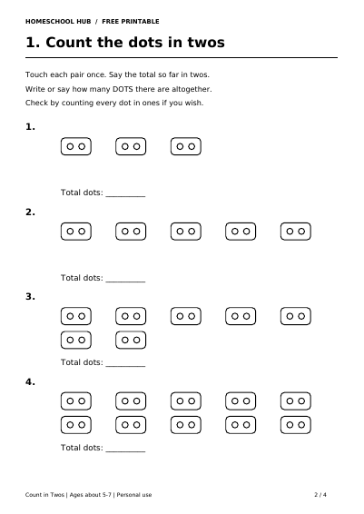

Free printable
Count in Twos: Pairs to 20
Ages about 5–7
Count pairs of dots and say the running total in twos, up to 20. Each pictured box holds two dots, helping your child connect a counting pattern with a quantity.
Four A4 pages include parent guidance and a worked model, dot-pair counting, number sequences, a counting mistake to fix, and full answers.
Try a short 5–10 minute session with a child who can count objects to 20. An adult can read the instructions and record spoken answers. You need a pencil; no real counters or scissors are required.
Print pages 2–3 in black and white. Touch each pair once and say the total so far. Count all the dots in ones to check if needed. Start with fewer pairs and save the optional number patterns for later.
For support, try Numbers 11–20. For a different kind of pattern, try Repeating Patterns.
